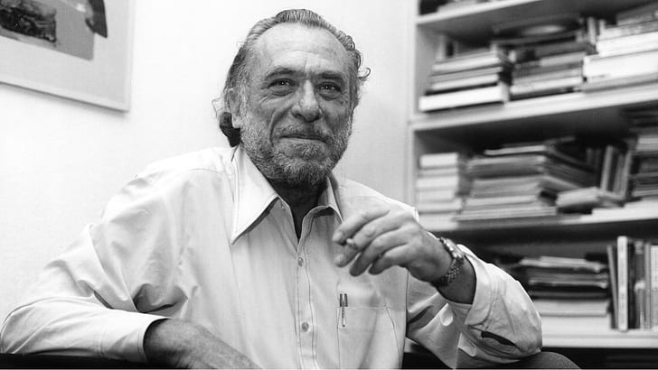

Henry Charles Bukowski, Jr.
Escritor, poeta

header info
"Obras destacadas: “Erecciones, Eyaculaciones, Exhibiciones y Cuentos Generales de Locura Ordinaria” • “Factotum” • “Flor, Puño y Lamento Bestial” • “Jamón con Centeno” • “Hollywood” • “Música de Agua Caliente” • “Me Atrapa el Corazón en Sus manos” • “El amor es un perro del infierno” • “El ruiseñor me desea suerte” • “Notas de un viejo sucio” • “Oficina de correos” • “Pulpa” • “Encorvado hacia el nirvana” • “La gente parece flores Por fin” • “Guerra todo el tiempo” •“Te sientes tan solo a veces que simplemente tiene sentido”"
--Charles Bukowski